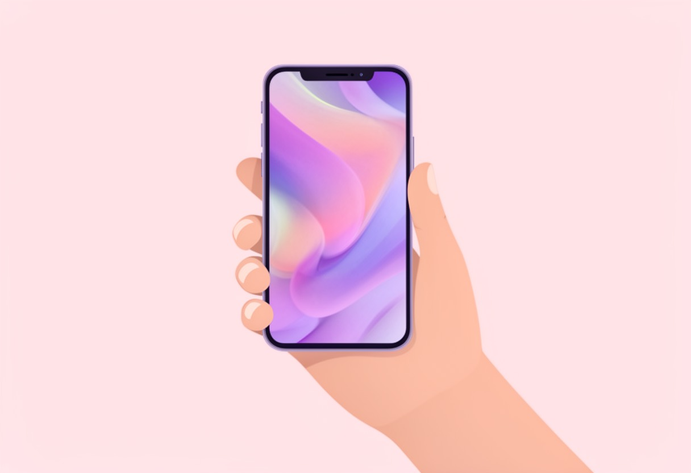

AI绘画入门:提示词怎么写
AI绘画入门:提示词怎么写 很多刚接触AI绘画的朋友，第一反应往往是：“只要我描述得足够详细，就能画出我想要的图。”于是，大家习惯性地堆砌形容词，写下一大段冗长的文字，结果生成的图片要么构图混乱，要么风格完全不对。其实，…
提示词 2026-09-17 · 约7分钟
2026-09-16 · AI绘画实验室 · 约6分钟读完 · 风格教程

作为一个每天要在手机屏幕上盯着看上千次的“视觉奴隶”，我受够了那些千篇一律的官方壁纸。要么是高饱和度的抽象色块，要么是清晰度不够的模糊风景。直到我彻底掌握了用AI生成专属壁纸的技巧，现在我的手机锁屏和桌面，每一周都会换一套全新的“私人定制”作品。
很多设计师朋友可能会觉得，AI生成的图片噪点多、构图乱，根本不能直接商用或自用。其实，只要掌握了正确的提示词逻辑和后处理流程，AI生成的壁纸不仅美观，而且拥有极高的分辨率潜力。今天这篇教程，我就把这套经过反复测试、稳定出图的流程拆解出来，从工具选择到最终导出，手把手教你搞定。
在动手之前，先想清楚你要什么风格。是极简主义的黑白线条？是赛博朋克风格的霓虹夜景？还是治愈系的二次元动漫少女？风格决定了我们后续Prompt（提示词）的走向。
关于工具，市面上有很多选择，Midjourney效果最好但门槛高且订阅贵；Stable Diffusion本地部署虽然免费但配置电脑很麻烦。对于大多数设计师和自媒体人来说，我推荐从云端在线工具入手，效率最高。
这里必须安利一个我最近一直在用的宝藏网站——这款免费AI助手。它最大的优点就是“零门槛”，无需注册，打开网页就能直接用。它不仅支持AI绘画，还能辅助我们优化提示词，甚至能生成简单的视频动态壁纸素材。对于不想折腾环境配置，只想快速出图的朋友来说，它的体验非常流畅，尤其是它的绘画模块，对中文提示词的兼容性做得不错，省去了翻译的麻烦。
免费体验小白AI助手 →AI绘画的核心在于“描述”。很多人失败是因为提示词太笼统，比如只写“一个美女”，AI不知道你要什么发型、什么背景、什么光影。
一个标准的壁纸Prompt结构应该是：主体描述 + 环境背景 + 风格设定 + 细节修饰 + 质量参数。
以生成一张“深夜雨夜的城市咖啡馆”壁纸为例，我们可以这样构建：
把上面这些词组合起来，用英文输入（虽然有些工具支持中文，但英文库更丰富）：
A cup of hot latte on a wooden table, through the window see a rainy city street with blurred neon signs, cinematic, neo-noir style, Wong Kar-wai color tone, depth of field, blurred background, raindrops on the glass, warm light contrast with cool outdoor tone, 8k, ultra-detailed, masterpiece, ray tracing.
小贴士：如果是做手机壁纸，一定要在Prompt末尾加上 vertical composition（竖构图）或者 16:9 ratio（如果是平板），这能避免AI生成横图导致裁剪后主体变形。
AI出图是概率事件，一次生成4张，可能只有一张能用。不要指望一键完美，要有“海选”的心态。
AI原生生成的图片通常分辨率有限（多为1024x1024），直接用作4K手机壁纸会显得模糊。这里需要用到“高清放大”功能。
大多数主流AI工具都内置了Upscale（放大）功能。选择“Standard”或“Chill”模式，将图片放大2倍或4倍。这一步不仅能提升分辨率，还能通过算法“脑补”出更多的纹理细节，比如咖啡杯的陶瓷质感、雨滴的折射光线等。
导出后，建议进入Photoshop或美图秀秀等修图软件进行最后微调：
在实际操作中，我踩过不少坑，分享几个经验：
low quality, blurry, bad anatomy, extra fingers, text, watermark（低质量、模糊、坏解剖结构、多余手指、文字、水印）。这能大幅减少废片率。AI绘画不是魔法，它更像是一个极其高效的灵感引擎和初稿绘制员。真正的艺术感，来自于你对构图的把控和对细节的挑剔。
现在，打开你的浏览器，试试用AI生成一张属于你自己的壁纸吧。从一张简单的风景开始，慢慢尝试更复杂的角色设计或抽象艺术。当你看到那张独一无二的图片出现在手机屏幕上时，那种成就感，是下载任何官方壁纸都无法比拟的。
如果有朋友在操作中遇到具体报错或提示词卡壳，可以在评论区留言，我会尽量抽空解答。也欢迎大家分享自己的AI壁纸作品，一起交流技巧。
AI绘画入门:提示词怎么写 很多刚接触AI绘画的朋友，第一反应往往是：“只要我描述得足够详细，就能画出我想要的图。”于是，大家习惯性地堆砌形容词，写下一大段冗长的文字，结果生成的图片要么构图混乱，要么风格完全不对。其实，…
提示词 2026-09-17 · 约7分钟

AI生成商品图的实战技巧 做电商或者自媒体运营的朋友都知道，一张高质感的商品图，往往决定了点击率的上限。过去，为了拍出一张有氛围感的产品照，我们需要租赁影棚、购买昂贵的灯光设备，甚至还要找专业的摄影师和修图师，一套流程走…
风格教程 2026-09-17 · 约5分钟